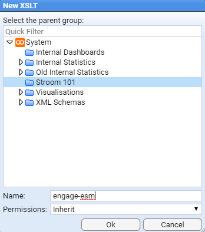
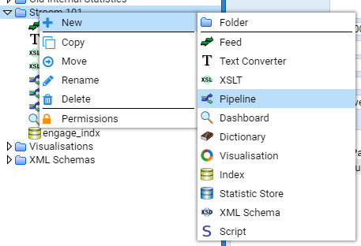
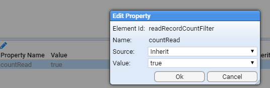
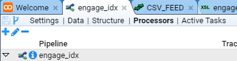

Stroom Quick-Start Guide - Indexing
Before you can visualise your data with dashboards you have to index the data; First I opted for creating a specific volume to hold my data, just because I wanted to keep my shards away from the default volumes;
Go to the Tools ➔ Volumes menu

Once the volumes dialogue opens click the blue plus sign at the top left of the window to add a new one

Select the node where you want the volume to be and the path you want to create, (because we are following the quick-start guide we just have one node and limited size, but we do want to set it as active so we can write documents to it and we want it to be public, because we might want other indexes to use it; your needs might be different.

Click ok and we’re good to go.
Then we can create an index by selecting index item in the explorer tree. You do this in the same way you create any of the items. Just select/create a folder that you want to create the new index in and right click, select New Index.

Choose a name for your new index

In the settings tab we need to specify the volume where we will store our shards
Now you need to add fields to this index.
Firstly there are two mandatory fields that need to be added: StreamId and EventId
Both should be of type Id, stored and indexed with the Keyword analyser

If you were following the quick-start instruction on ingesting the mock_stroom_data.csv, we’ll use those fields here.
Open the fields tab then create the following fields:
| Name | Type | Store | Index | Positions | Analyser | Case Sensitive |
|---|---|---|---|---|---|---|
| StreamId | Id | Yes | Yes | No | Keyword | false |
| EventId | Id | Yes | Yes | No | Keyword | false |
| Id | Text | Yes | Yes | No | Keyword | false |
| Guid | Text | Yes | Yes | No | Alpha numeric | false |
| FromIp | Text | Yes | Yes | Yes | Keyword | false |
| ToIp | Text | Yes | Yes | Yes | Keyword | false |
| Application | Text | Yes | Yes | Yes | Alpha numeric | false |
We are creating fields in our index to match the fields we have ingested to provide a place for the data to go that Stroom can reference.

When you've done that, save the new index.
Now create a new XSLT. We are going to convert xml data into something indexable by Stroom.

To make things manageable we create our new XSLT with the same name as the index in the same folder. After you've set the name just save it and close it, we’ll add some code in there later.


Now we get to send data to the index
Create a new pipeline called Indexing (we are going to make this a template for future indexing requirements).

Edit the structure of the pipeline
Add the following element types with the specified names
| Type | Name |
|---|---|
| XMLParser | parser |
| SplitFilter | splitFilter |
| IdEnrichmentFilter | idEnrichmentFilter |
| XSLTFilter | xsltFilter |
| IndexingFilter | indexingFilter |
So it looks like this (excluding the ReadRecordCountFilter and WriteRecordCountFilter elements)

Once the elements have been added you need to set the following property on the elements:
| Element | Property | Value |
|---|---|---|
| splitFilter | splitCount | 100 |
To do this we select the element then double click the property value in the property panel which is below it.

The dialogue pops up where you can set the values

Save the pipeline, using the top left icon ( ), then close the pipeline tab.
), then close the pipeline tab.
Now create a new pipeline

Which we will base on our new “Indexing” template pipeline
On our structure tab

Click in the “Inherit From” window

Select our Indexing pipeline template that we just created

Now we need to set the XSLT property on the xsltFilter to point at the XSLT we created earlier and set the index on the indexFilter to point to the index we created. This will appear as below (excluding the ReadRecordCountFilter and WriteRecordCountFilter elements)

Once that's done you can save your new pipeline
Next we need to create an XSLT that the IndexingFilter understands.
Open the feed we created in the quick-start guide if you find some processed data in your feed - i.e. browse the data

Click the stepping button 
Select your new pipeline

Paste the following into your xsltFilter
<?xml version="1.0" encoding="UTF-8" ?>
<xsl:stylesheet
xmlns="records:2" xmlns:stroom="stroom"
xmlns:xsl="http://www.w3.org/1999/XSL/Transform" xmlns:xsi="http://www.w3.org/2001/XMLSchema-instance"
version="2.0">
<xsl:template match="/Events">
<records xsi:schemaLocation="records:2 file://records-v2.0.xsd"
version="2.0">
<xsl:apply-templates />
</records>
</xsl:template>
<xsl:template match="Event">
<record>
<data name="StreamId">
<xsl:attribute name="value" select="@StreamId" />
</data>
<data name="EventId">
<xsl:attribute name="value" select="@EventId" />
</data>
<xsl:apply-templates select="*" />
</record>
</xsl:template>
<!-- Index the Id -->
<xsl:template match="Id">
<data name="Id">
<xsl:attribute name="value" select="text()" />
</data>
</xsl:template>
<!-- Index the Guid -->
<xsl:template match="Guid">
<data name="Guid">
<xsl:attribute name="value" select="text()" />
</data>
</xsl:template>
<!-- Index the FromIp -->
<xsl:template match="FromIp">
<data name="FromIp">
<xsl:attribute name="value" select="text()" />
</data>
</xsl:template>
<!-- Index the ToIp -->
<xsl:template match="ToIp">
<data name="ToIp">
<xsl:attribute name="value" select="text()" />
</data>
</xsl:template>
<!-- Index the Application -->
<xsl:template match="Application">
<data name="Application">
<xsl:attribute name="value" select="text()" />
</data>
</xsl:template>
</xsl:stylesheet>
Which should look like this

What we are trying to do is turn the data into Stroom record format. This is basically name value pairs that we pass to the index. Step through the data using the top right arrows to ensure the XSLT produces correct output.
We're nearly there for indexing the data - you just need to tell the pipeline to pick up all processed data and index it.
Go back to your pipeline and go to the processors tab.

Add a filter using ( ) and tell it to process all
) and tell it to process all Events data when the filter dialogue opens so it looks like this

Enable the processor and the filter by clicking the enabled tick boxes

Stroom should then index the data, assuming everything is correct
If there are errors you'll see error streams produced in the data browsing page, i.e. where you would normally see your processed and raw data. If no errors have occurred, there will be no rows in the data page.
If it all goes to plan you'll see index shards appear if you open the index you created and click the shards tab.

The document count doesn't update immediately so don't worry if the count is 0. The count is updated on shard flush and happens in the background.
Now that we have finished indexing we can display data on a dashboard.